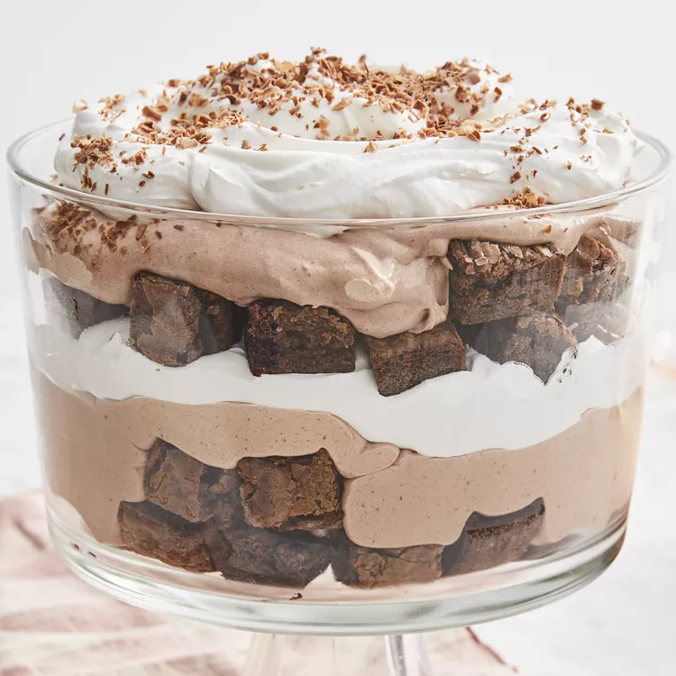

Chocolate Trifle

This trifle recipe is so easy to make! Folks line up for this trifle at church functions.
Ingredients
- 1 (18.25 ounce) package brownie mix
- ¾ cup water, divided
- 1 large egg
- ¼ cup vegetable oil
- 1 (14 ounce) can sweetened condensed milk
- 1 (3.9 ounce) package instant chocolate pudding mix
- 1 (8 ounce) container frozen whipped topping, thawed
- 1 (12 ounce) container frozen whipped topping, thawed
- 1 (1.5 ounce) bar chocolate candy
Steps
- Preheat the oven to 350 degrees F (175 degrees C). Grease a 9-inch square glass baking pan.
- Combine brownie mix, egg, 1/4 cup water, and vegetable oil in a large bowl. Stir until well-blended,
about 50 strokes. Spread into the prepared pan.
- Bake in the preheated oven until a toothpick inserted 1 inch in from the edges comes out clean,
25 to 30 minutes. Remove from the oven and let cool completely, about 30 mintues.
- Cut cooled brownies into 1-inch squares and set aside.
- Combine condensed milk, remaining 1/2 cup water, and pudding mix in a large bowl; mix until smooth.
Fold in 8 ounces whipped topping until no streaks remain.
- Place 1/2 of the brownies in a trifle bowl or glass serving dish. Top with 1/2 of the pudding mixture,
then 1/2 of the 12-ounce container of whipped topping. Repeat layers. Shave chocolate on top for garnish.
- Refrigerate 8 hours before serving.